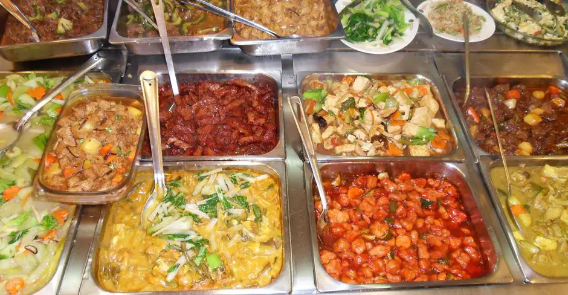

For a true taste of Leyte, exploring its local markets and dining spots offers an authentic and immersive experience. From bustling public markets to casual eateries, these places showcase the province’s fresh ingredients, traditional dishes, and the everyday food culture that defines local life.

Local markets in Leyte are vibrant hubs where fresh produce, seafood, and regional delicacies are sold daily. Places like the Tacloban Public Market give visitors a firsthand look at the ingredients that shape the region’s cuisine. Here, you’ll find everything from freshly caught fish to native snacks like Binagol and Moron (food), making it an ideal spot to explore local flavors in one place.
Dining in Leyte ranges from simple roadside eateries to cozy local restaurants that serve home-style meals. Many establishments focus on fresh, locally sourced ingredients, especially seafood and traditional Filipino dishes. Whether you’re enjoying a meal in a small carinderia or dining by the coast, the experience is less about luxury and more about authenticity, warmth, and the rich flavors of the region.

Tacloban Public Marketis a key spot to find fresh seafood, produce, and local delicacies.
Local markets offer a mix of ingredients, ready-to-eat food, and souvenir items.
Dining experiences in Leyte often focus on fresh, home-style cooking.